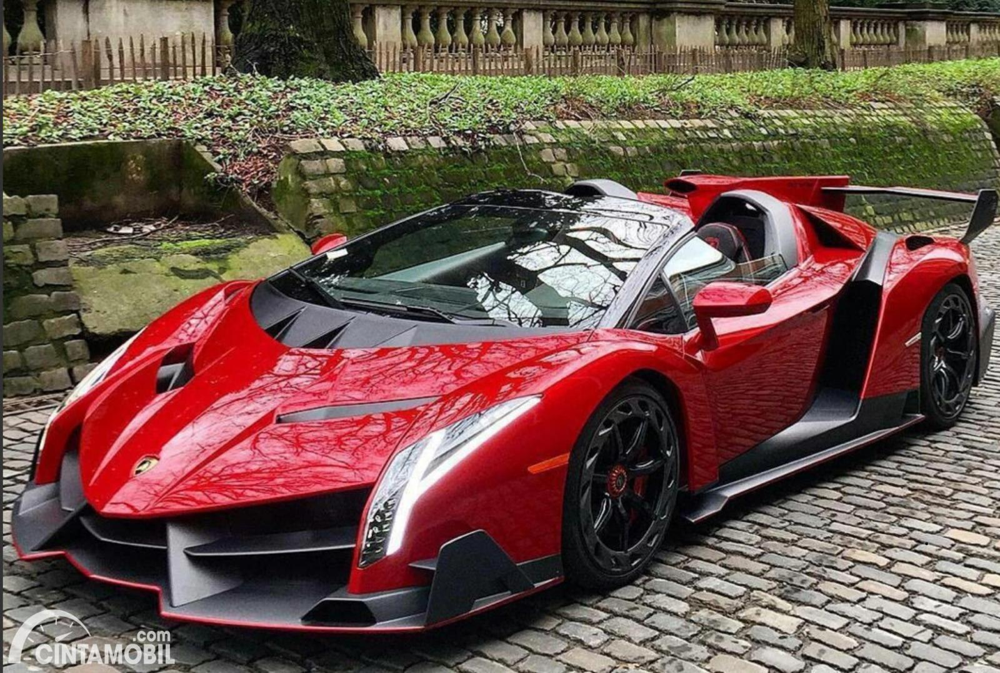
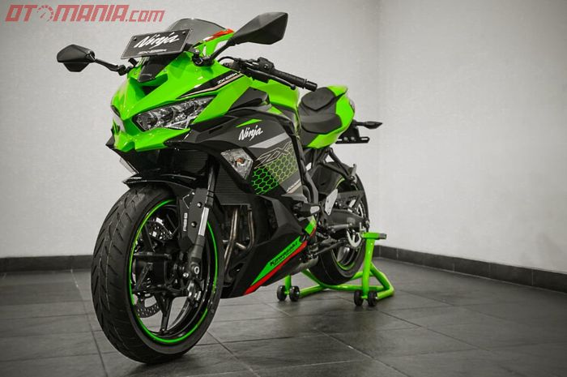

dikenal dengan mobil sport mahal dan terkenal di seluruh dunia
Banyak kelebihan yang ditawarkan oleh Lamborghini mulai dari segi desainnya, mesin bertenaga besar hingga beragam fitur menarik yang ditawarkan. Untuk harganya tentu mahal akan tetapi sebanding kualitasnya sekitar Rp. 6 Milyar bahkan Hingga Rp. 8 Milyar.

Dikenal dengan motor bersuara moge tetapi 250 cc dengan model yang mewah dan elegant
Kelebihan kawasaki ZX-25R yang pertama tentunya terdapat pada desain motor yang sudah sangat sporty, dirancang dengan model ala MotoGP dengan menggunakan full firing kemudian model tempat duduk split level membuat penampilan ninja ZX-25R sangat terlihat sporty.